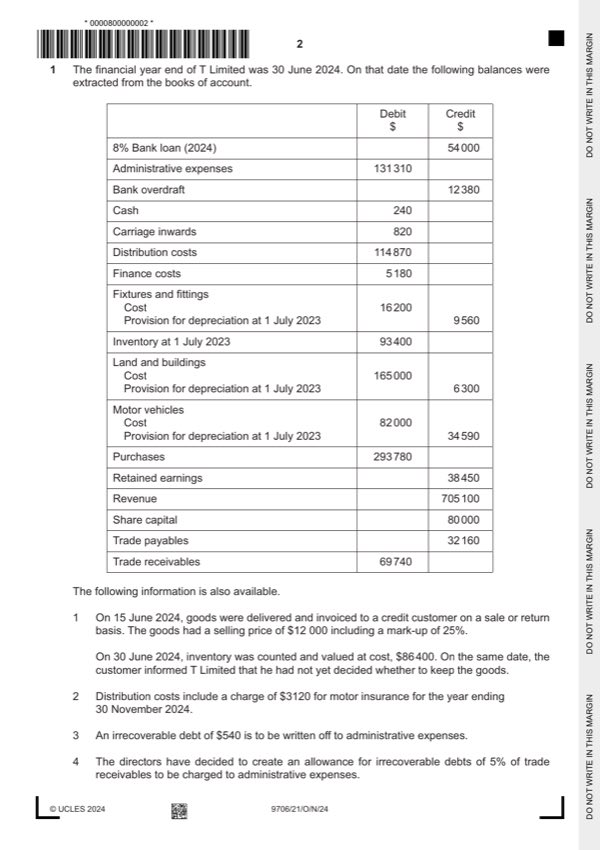

Question 1

Original paper page 2
Part 1(a) — solution
- W1 – Revenue $705 100 – $12 000 = $693 100 (1)
- $9 600) (1) = $292 000 (1)OF
- = $125 152 (1)OF
- = $136 054 (1)OF
- W5 – Finance costs $5 180 + $1 080 = $6 260 (1)
Mark points
- W1 – Revenue $705 100 – $12 000 = $693 100 (1)
- $9 600) (1) = $292 000 (1)OF
- = $125 152 (1)OF
- = $136 054 (1)OF
- W5 – Finance costs $5 180 + $1 080 = $6 260 (1)
Part 1(b) — solution
- ($240 – $12 380) (1) + $45 000 (1) – $28 080 (1) = $4 780 (1 )OF
Mark points
- ($240 – $12 380) (1) + $45 000 (1) – $28 080 (1) = $4 780 (1 )OF
Part 1(c) — solution
- W1: $38 450 + 107 634 = 146 084 (1) OF
- W2: $32 160 + 680 = 32 840 (1)
Mark points
- W1: $38 450 + 107 634 = 146 084 (1) OF
- W2: $32 160 + 680 = 32 840 (1)
Part 1(d) — solution
- Removed the negative cash balance (1)
- Repaid one half of the 8% bank loan that was due for repayment with the
- Beneficial interest rate compared to the bank loan (1)
- Tied the company into a further five years of debt (1)
- Weakened the immediate capital structure of the company (1)
- May cause longer-term cash flow problems to meet repayment terms (1)
- Security is required (1)
Mark points
- Removed the negative cash balance (1)
- Repaid one half of the 8% bank loan that was due for repayment with the
- Beneficial interest rate compared to the bank loan (1)
- Tied the company into a further five years of debt (1)
- Weakened the immediate capital structure of the company (1)
- May cause longer-term cash flow problems to meet repayment terms (1)
- Security is required (1)
Part 1 — solution
July (1) 30 Sept (1)
2023 Disposal 14 800 2024 Balance c/d 70 000
Mark points
- Include the ideas shown in the solution above.
Part 1 — solution
July (1)OF
Motor vehicles provision for depreciation account
Date Details $ Date Details $
2023 Disposal 7 500 2023 Balance b/d 6 000
Mark points
- Include the ideas shown in the solution above.